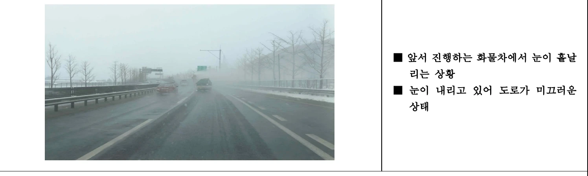

728. Which of the following are the safest ways to drive in the given situation? (Select TWO)

- ①Slow down and check the situation ahead for safety.
- ②Switch to the right lane from the second lane and proceed after overtaking the truck.
- ③Reduce the speed by 10 percent of the maximum speed limit due to the snow.
- ④Lane changes are not allowed in sections marked with white dotted lines.
- ⑤Check the icy road conditions, and be mindful of the traffic behind you while driving.
Show answer
Answer
① Slow down and check the situation ahead for safety.
⑤ Check the icy road conditions, and be mindful of the traffic behind you while driving.
Reference
The driver of a car or horse must not change the course of the car or horse in places where safety signs are installed and changing course is specifically prohibited. However, this does not apply if there are obstacles due to damage to the road or road construction (Article 14, Paragraph 5 of the Road Traffic Act). You can change lanes in the white dotted line section, but you must not change lanes in the white solid line section. Also, even when there are double dashed and solid lines, you can only change lanes on the side with the dotted line. In addition, the safety of vehicles moving in front and behind is checked before proceeding. If snow has fallen and accumulated 20 millimeters or less, drive at a speed reduced by 20 percent from the maximum speed limit on the road.
Reference text is a machine translation for study.